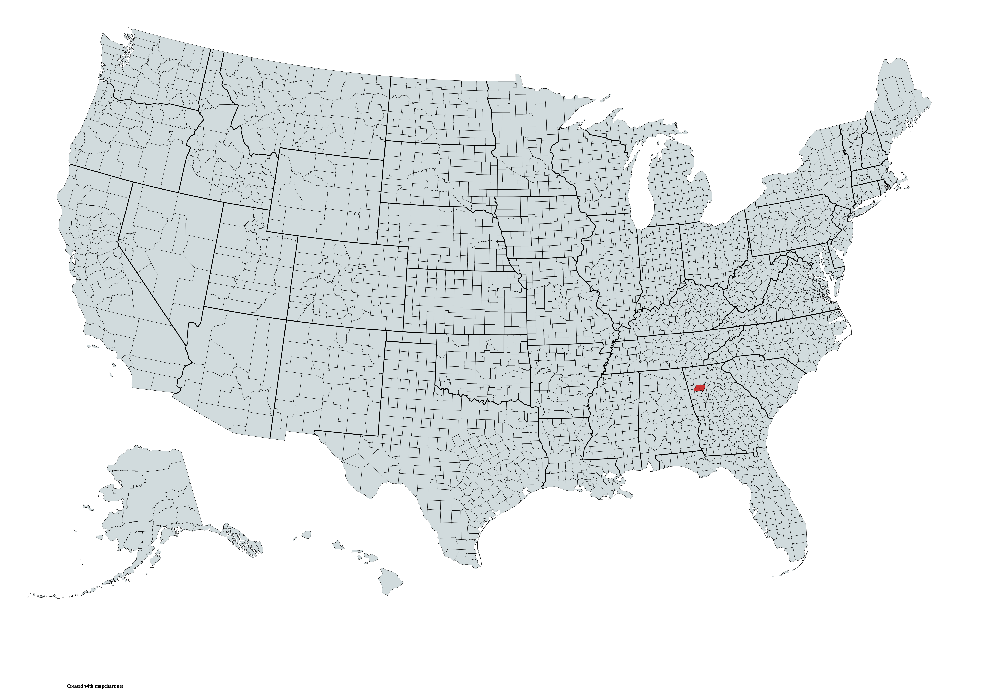

Mission Statement
Pastor’s Picks exists to: 1. find, encourage, and endorse good, high-quality Christian men and women who feel called into public service and to 2. supply Americans with quality options for consideration in the voting booth.
Organizational Goals
- Goal 1: Stay true to Christ and encourage others to reflect their faith through their votes.
- Goal 2: Pray for wisdom and courage.
- Goal 3: Help Christian politicians be lights for Jesus in their workspaces.
2028 National Outreach Vision
Our goal is to reach 10,000 subscribers and have representation in every county (and equivalent) before 2028.
Total Subscribers
Will you become the next subscriber?

Counties Represented
Is your county represented?